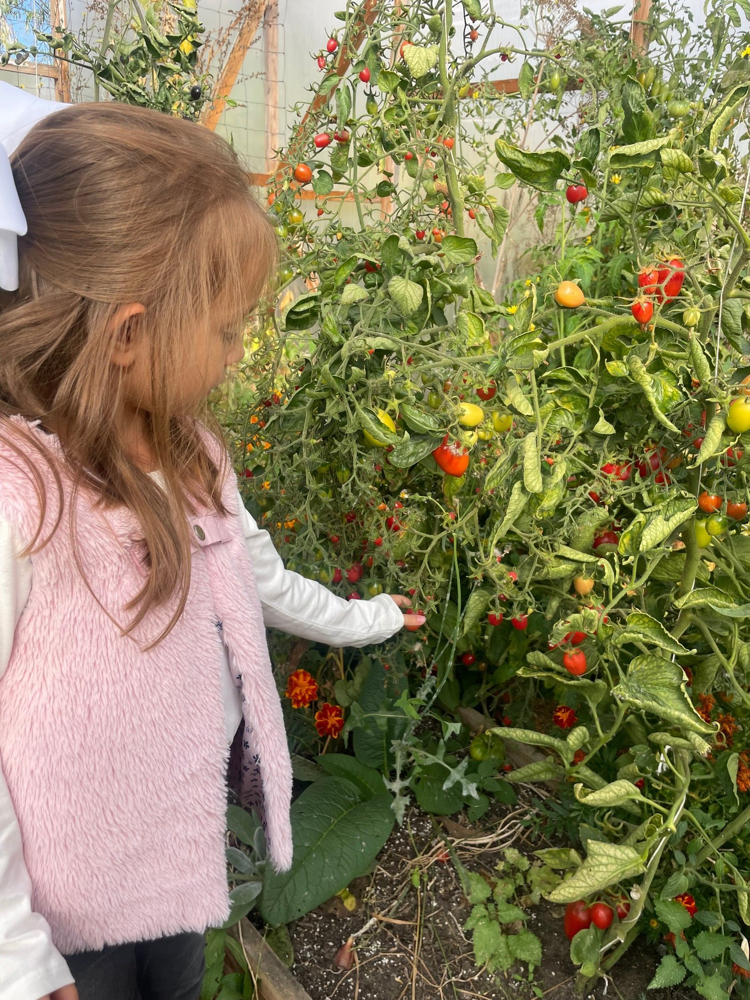

Podczas spotkania dziecko poznaje świat zapachów, faktur, kolorów i kształtów.
Wśród ziół, kwiatów, liści i naturalnych materiałów odkrywa różnorodne elementy, dotyka ich, porównuje i nazywa swoje skojarzenia.
Dziecko tworzy własną kompozycję z wybranych roślin i dodatków, ucząc się poprzez swobodne eksperymentowanie.
Każdy element może stać się początkiem rozmowy, opowieści lub małego odkrycia. Różnorodne faktury i zapachy zachęcają do aktywnego poznawania otoczenia, rozwijają ciekawość, koncentrację i wyobraźnię, a samo tworzenie daje przestrzeń do samodzielnego podejmowania decyzji.
DOTKNIJ - ODKRYJ - STWÓRZ
